Figma learning new skills
Dit project is een persoonlijk oefenlab waarin ik mijn visuele en technische vaardigheden in Figma verder ontwikkel. Ik volg hiervoor tutorials op YouTube en vertaal de geleerde technieken naar eigen illustraties en animaties. De focus ligt niet op het maken van volledige UX-projecten, maar op het opbouwen van een sterke basis in vectorillustratie, compositie en micro-interactions.
Ik werk vooral met de Pen Tool, boolean operations zoals union en subtract, het gebruik van vormen, masking en het opbouwen van complexere beelden uit simpele shapes. Daarnaast experimenteer ik met animaties in Figma om beweging en timing beter te begrijpen. Sommige oefeningen verliepen vlot, bij andere moest ik zelf oplossingen zoeken wanneer bepaalde functies, zoals “Use as mask”, niet werkten zoals verwacht.
Deze verzameling toont hoe ik stap voor stap mijn comfort met Figma vergroot, met als doel om later zelfstandig iconen, illustraties en visuele assets te kunnen maken voor UX/UI-projecten.
